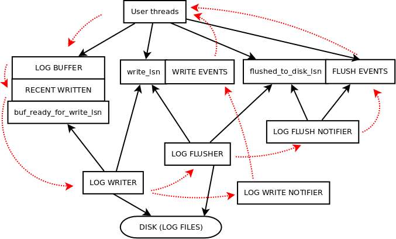

1. 前言#
InnoDB 的 redo log 模块是保证事务持久性的核心，InnoDB 遵守 WAL 原则保证总是日志先行，即在持久化数据文件时保证其对应的 redo 日志已经写到磁盘，这样在崩溃的情况下，它就可以用于恢复对已修改但尚未刷新到磁盘的页面的修改。本文主要讨论 InnoDB 中 redo 日志的物理组织格式，内存结构及前后向的生成/应用流程。可以参考阅读文档：
2. Redo 日志的物理格式#
在 8.0.30 版本前，MySQL 通过 innodb_log_file_size 和 innodb_log_files_in_group 分别控制 redo 文件的大小和数目，文件名为 ib_logfilexx；在 8.0.30 版本后，官方新加了参数 innodb_redo_log_capacity 并允许动态配置 redo 日志的总容量，系统一共维护了 32 个文件名为 #ib_redoxx 和 #ib_redoxx_tmp，具有 _tmp 后缀的文件为空余未使用的文件。redo 日志中的数据是以 append 的形式不断增加，文件中任一位点的数据对应一个永久递增的 LSN 号标志。
一个 redo 文件首先以 LOG_FILE_HDR_SIZE (2KB = 4*512B) 大小的 file header 开头，包含 header info block、checkpoint 1、encryption info、checkpoint 2 这 4 个block；其中 header info block 记录了一些，4字节的 Log 版本 FORMAT、4字节 LOG_UUID、8字节 START_LSN 标识的当前文件开始LSN、最长32位的 Creator 信息表示当前 mysql 版本。有两个 checkpoint 的原因是通过 double write 机制防止单个 checkpoint 记录因为写盘过程中间 crash 而损坏（现在多数 SSD 支持原子写 4K 粒度）。
这里需要注意的是在 8.0 之前的版本中，checkpoint_lsn 一定指向一个 mtr record group 的开头，并且该 mtr record 应该被恢复（虽然相关页面仍然可能已被刷写下去）。但从 8.0 开始，由于 recent_closed buffer 的存在，这个值可能指向 record group 中间的某个字节，在这种情况下，恢复应该跳过包含检查点 lsn 的日志记录组并从其下一条开始。redo 文件中写入的 checkpoint_lsn 一定在此 redo 的 lsn 范围。
接着 file header 的是一个个 OS_FILE_LOG_BLOCK_SIZE (512B) 大小的 log block，包括12字节的 Header (block number + data length + first record offset + checkpoint number)、496个字节的 Body、4字节的 Tailer (checksum)。对于 Header 部分的说明是：
- 4字节 Block Number，老版本中 Flush Flag 占用最高位bit标识一次 I/O 的第一个 Block，剩下的31个 bit 是当前 Block 编号
- 2字节 Data Length，长度为 0 为 未使用 block（reuse 情况下可能无效），长度为 [12 , 508) 表示最后一个未写完的 block， 长度为 512 表示写完整的 block；
- 2字节 First Record Group Offset，用来指向 Block 中第一个 mtr record group 的开始位置，如果和 Data Length 相同则说明内部没有开启记录新的 mtr record group；
- 4字节 Epoch Number，和 Block Number 一起组成了 block 的唯一标志，通过 64 位 block start lsn 转换获得。在老版本中，这里记录的是每次刷 checkpoint 时推进的 log_sys->next_checkpoint_no 的低四位。
在 log block 的 body 部分，则是一条条实际的 redo log record，或者在 InnoDB 中称为 mtr record 更为贴切。每个 redo record 的第一个 Byte 是这个记录的类型，其中最高位的 bit 为 MLOG_SINGLE_REC_FLAG，如果被设置则表示此 mtr 只包含了（最多单个页相关）的单条记录，否则是由多条单 record 组成的 mtr record group，并且在 group 结尾会以 MLOG_MULTI_REC_END标记；之后以压缩格式记录当前 record 对应的 space id 和 page no（除 TABLE_DYNAMIC_META 等类型）；接着是当前 record 对应的 record body 部分内容，具体内容会由 record 的类型决定。
InnoDB 的 redo 是 Physiological Logging，网上一种常用说法是 “Physical to a page，logical within a page”，实际上可以理解是在记录日志时对前向过程日志记录量和后向日志恢复速度的优化考虑，在对于 page 内的修改日志并非一定是 logical 的，但在对于一个或多个 page 的固定模式的修改可以通过 logical log 来减小 redo 记录量。另外在 undo 相关的分析文章中提到过 undo 表空间数据也是通过 redo 来维护的，而 undo 本身是基于逻辑而非物理去做回滚的。
3. Redo 日志的生成#
首先有必要介绍 InnoDB 中 mtr (mini-transaction) 的概念，InnoDB 中对于物理文件的修改都是以 mtr 作为原子单位（无论其内是 single 还是 multi record 的）。一个 mtr 在前向执行过程中会占据所需的资源，包括 index、page 及其对应物理锁等，以保证并发操作正确性，并将数据修改操作对应生成的 redo 在 mtr 内部缓存。在 mtr commit 的时候此 mtr 会将缓存的 redo record 提交到全局 log buffer 中等待落盘。需要注意的是，在内存逻辑来看（不发生crash情况下）mtr 一旦提交就代表了这个物理操作在系统全局产生持久化效果，哪怕对应所属的 transaction 还没有或最终最终提交，因此这里在必须时就需要 undo mtr 的操作，因此在对应数据操作前都需要先记录 undo；此外，部分物理操作可能不会被撤销，比如空间拓展分配等。
如果 mtr 产生 redo log 则其在提交过程中：
- 根据数据长度向 log_sys 申请对应的全局顺序记录的 sn 范围，其通过加上 block header 和 tailer，不包括 file header 可以转换为对应的 lsn 范围；并且等待到 log buffer 的空间足够对应 sn 范围数据被写入；
- 对于 mtr 中缓存的所有 redo record，按 log block 的格式将 header 和 tailer 留空 copy body 内容，并将 header 中的 First Record Group Offset 字段（写完后的下一个）填上；
- 等待至 recent_written link_buf 有空闲位置，表示到这一位置的 lsn 对应的 log 可以被写入；再推进此结构的中相应的 lsn 范围，表示这一段内容已经完整写入到 log buffer 中，并尝试推进其 m_tail（已经连续完整写入到位置）；
- 等待至 recent_closed link_buf 有空闲位置，表示到这一位置的 lsn 对应的 dirty page 可以被加到 flush list 上；再将 dirty page 挂到 flush list 上；
- 最终释放所有 page 锁等独占资源。
4. Redo 日志的写入#

在 mtr redo record 写入到全局 log buffer 中后，系统通过全局结构 log_t *log_sys 和后台工作线程来写入 redo 日志，并维护如各种 lsn 位点等相关状态。
后台工作线程有如下这些：
1
2
3
4
5
6
7
8
9
10
11
12
13
14
15
16
17
|
/* 控制 log 文件的轮转 */
void log_files_governor(log_t *log_ptr);
/* 将全局 log buffer 中的日志写入到 OS buffer 中 */
void log_writer(log_t *log_ptr);
/* 将 OS buffers 中的数据刷写到磁盘上 (fsyncs) */
void log_flusher(log_t *log_ptr);
/* 通知用户线程对应 log write 完成，write_lsn 已更新 */
void log_write_notifier(log_t *log_ptr);
/* 通知用户线程对应 log flush 完成，flushed_to_disk_lsn 已更新 */
void log_flush_notifier(log_t *log_ptr);
/* 检查是否需要要求完成强制刷脏并写入 checkpoint lsn 到日志文件中 */
void log_checkpointer(log_t *log_ptr);
|
这里刷写相关的任务其实都是围绕 log file 和 log buffer 首位端的推进：
- 系统维护了所有的 log file 的内存对象 Log_files_dict，并通过 log_files_governor 控制已写入完全（可 purge 或仍需要）、当前正在写入、后续可使用的 redo 文件状态；
- log buffer 头部的推进的相关状态，buf_limit_sn（限制可被写入到 buffer 的最大 sn，即 wirte_lsn + buf_size）、recent_written buffer（追踪控制 mtr 并发写入状态 log buffer）、recent_closed buffer（追踪控制 dirty page 挂载 flush list）；
- log buffer 刷写状态，到 recent_written tail 位置的 redo 已经完整可写盘（这里需要等至上一次 checkpoint 加 redo file 总容量超过目标写入 lsn），log writer 会将 log block 的 header 和 tailer 填充，然后确定写入范围直接从 log buffer（完整 log_write_ahead_size 大小倍数）或通过 write_ahead_buffer（小于 log_write_ahead_size） 写入 log file；
- log buffer 尾部的推进的相关状态，如 write_lsn、flushed_to_disk_lsn，事件通知等。
- checkpoint 推进，并对 log file 尾部文件的回收。
对应线程具体的执行流程介绍可以参考官方文档。
5. Redo 日志应用及 InnoDB 奔溃恢复#
在奔溃恢复的情况下，InnoDB通过应用 redo 来恢复已经提交但还没有刷盘的事务数据。另外，一些基于物理复制架构的数据库，像 PolarDB、AWS Aurora 等，还存在通过应用 redo 来进行数据同步的流程。我们这里只讨论 recovery 的 redo 阶段，整个 InnoDB server 的启动简化流程如下：
1
2
3
4
5
6
7
8
9
10
11
12
13
14
15
16
17
18
19
20
21
22
23
24
25
26
27
28
29
30
31
32
33
34
35
36
37
38
39
40
41
42
43
44
45
46
47
48
49
50
51
52
53
54
55
56
57
58
59
60
61
62
63
64
65
66
67
68
69
70
71
72
73
74
75
76
77
78
79
80
81
82
83
84
85
86
87
88
89
90
91
92
93
94
95
96
97
98
99
100
101
102
103
104
105
106
107
108
109
110
111
112
113
114
115
116
117
118
119
120
|
dberr_t srv_start(bool create_new_db) {
// Step 0. 环境准备和检查，...
// Step 1. 初始化 SRV 变量，...
srv_boot();
// Step 2. 扫描配置的目录，生成文件map
fil_init(innobase_get_open_files_limit());
// 确定路径...
// 扫描获取 .IBD 和 undo 文件，从首 page 中读取 space_id 并记录到 fil_system 的 Tablespace_dirs
err = fil_scan_for_tablespaces();
// Step 3. INNODB STATUS 监控文件...
// Step 4. 初始化 AIO 线程...
os_aio_init(srv_n_read_io_threads, srv_n_write_io_threads)
// Step 5. 初始化 buffer pool...
err = buf_pool_init(srv_buf_pool_size, srv_buf_pool_instances);
// Step 6. 初始化多个子系统...
fsp_init();
pars_init();
recv_sys_create();
recv_sys_init();
trx_sys_create();
lock_sys_create(srv_lock_table_size);
os_aio_start_threads();/* i/o-handler threads */
buf_flush_page_cleaner_init();
// Step 7. 初始化 system tablespace...
// ibdata1 文件内含系统表空间（注意与 元数据DD表空间 或叫 内部系统表 的 mysql.ibd 区分）
// 内含 change buffer(，特定情况下含用户表、undo 表)等
// 创建对应的 sysspace 并加入 fil_system (fil_space_create + fil_node_create)
err = srv_sys_space.open_or_create(false, create_new_db,
&sum_of_new_sizes, &flushed_lsn);
dict_persist_init();
// Step 8. 初始化 log sys，这里还会扫描出所有 redo file 来构建 Log_files_dict
err = log_sys_init(create_new_db, flushed_lsn, new_files_lsn);
//...
if (create_new_db) {
// 初始化建立新 db
} else {
// Step 9. BP状态重置
err = dblwr::v1::init(); /* 初始化 double write */
buf_pool_invalidate(); /* 淘汰所有 page 确保 recovery 重读 */
// Step 10. 打开所有 log files 和 system data files
fil_open_system_tablespace_files();
// Step 11. 开始恢复 redo 日志...
err = recv_recovery_from_checkpoint_start(*log_sys, flushed_lsn);
// ... 初始化 innodb data dictionary system
// Step 12. 启动后台 log 线程 ...
if (!srv_read_only_mode) { log_start_background_threads(*log_sys); }
// Step 13. 应用剩余的最后一批 hashed log records
if (srv_force_recovery < SRV_FORCE_NO_LOG_REDO) {
err = recv_apply_hashed_log_recs(*log_sys,
!recv_sys->is_cloned_db && !log_upgrade);
}
// 一些检查...
// Step 14. 刷写所有脏页
if (!srv_force_recovery && !srv_read_only_mode) {
buf_flush_sync_all_buf_pools();
}
// Step 15. 完成 redo 日志恢复后的清理，恢复dynamic metadata
MetadataRecover *dict_metadata = recv_recovery_from_checkpoint_finish(false);
/* 此时 DD（table persistent data）还没有完全 recovery */
if (!recv_sys->is_cloned_db && !dict_metadata->empty()) {
fil_space_t *space = fil_space_acquire_silent(dict_sys_t::s_dict_space_id);
if (space == nullptr) {
dberr_t error = fil_ibd_open(true, FIL_TYPE_TABLESPACE, dict_sys_t::s_dict_space_id,
predefined_flags, dict_sys_t::s_dd_space_name,
dict_sys_t::s_dd_space_file_name, true, false);
} else {
fil_space_release(space);
}
dict_persist->table_buffer = ut::new_withkey<DDTableBuffer>(UT_NEW_THIS_FILE_PSI_KEY);
dict_metadata->store(); // 将恢复过程中persistent dynamic metadata修改 store 到 mysql.innodb_dynamic_metadata
log_buffer_flush_to_disk(*log_sys);
}
ut::delete_(dict_metadata);
// Step 16. 构建 Undo Tablespaces 和 Rollback Segments 内存结构并进行恢复
err = srv_undo_tablespaces_init(false);
trx_purge_sys_mem_create();
purge_queue = trx_sys_init_at_db_start();
srv_undo_tablespaces_upgrade();
trx_purge_sys_initialize(srv_threads.m_purge_workers_n, purge_queue);
}
/* Open temp-tablespace and keep it open until shutdown. */
err = srv_open_tmp_tablespace(create_new_db, &srv_tmp_space);
err = ibt::open_or_create(create_new_db);
// Step 17. 完整化 undo 表空间
// 增加 rollback segment 数目到 srv_rollback_segments，此次配置可能和上次不同
trx_rseg_adjust_rollback_segments(srv_rollback_segments);
// 构建完成完整 undo 表空间，删除 trunc.log，设置active
srv_undo_tablespaces_mark_construction_done();
undo::spaces->s_lock();
for (auto undo_space : undo::spaces->m_spaces) {
if (!undo_space->is_empty()) { undo_space->set_active(); }
}
undo::spaces->s_unlock();
// Step 18. 监控系统等...
// Step 19. something...
return (DB_SUCCESS);
}
|
其中比较关键的阶段在于 Step 11 recv_recovery_from_checkpoint_start 中进行 redo 恢复以及 Step 16 恢复 undo 和 trx 系统的状态，后者在 undo 系统的讨论中进行介绍，本文主要讨论前者。
1
2
3
4
5
6
7
8
9
10
11
12
13
14
15
16
17
18
19
20
21
22
23
24
25
26
27
28
29
30
31
32
33
34
35
36
37
|
dberr_t recv_recovery_from_checkpoint_start(log_t &log, lsn_t flush_lsn) {
// Step 1. 初始化flush_rbt，保证脏页按序插入flush list
buf_flush_init_flush_rbt();
// Step 2. 通过扫描 Log_files_dict 找最后的 checkpoint 记录
Log_checkpoint_location checkpoint;
recv_find_max_checkpoint(log, checkpoint);
// ...
/* Step 3. 解析存储 redo record：
1. 从 checkpoint 读取 redo 文件暂存到 log_sys->buf；
2. 按 log block 扫描去 block head/tail 存到 recv_sys->buf 中；
3. 将 recv_sys->buf 中的记录 parse，生成 recv_t *recv（单个 record）和 recv_addr_t *recv_addr（page 所有 record 串）；
4. 存储 recv_addr_t 到 recv_sys 哈希表对应的 (space_id, page_no) 处
5. （如果占用内存较大）将所有存储的 record apply 到 page 上，bp内的走 recv_recover_page、bp外的走 buf_read_recv_pages
*/
recv_recovery_begin(log, checkpoint_lsn);
// Step 4. 初始化 log_sys 状态，包括各 lsn 位点、各 buf 状态
lsn_t recovered_lsn = log.recovered_lsn = recv_sys->recovered_lsn;
auto check_scanned_lsn = log.m_scanned_lsn;
if (check_scanned_lsn % OS_FILE_LOG_BLOCK_SIZE == 0) {
// If it is at block boundary, add header size.
check_scanned_lsn += LOG_BLOCK_HDR_SIZE;
}
err = log_start(log, checkpoint_lsn, recovered_lsn, false);
if (!srv_read_only_mode) {
log.next_checkpoint_header_no = log_next_checkpoint_header(checkpoint.m_checkpoint_header_no);
err = log_files_next_checkpoint(log, checkpoint_lsn);
}
mutex_enter(&recv_sys->mutex);
recv_sys->apply_log_recs = true;
mutex_exit(&recv_sys->mutex);
return DB_SUCCESS;
}
|
对应 redo 的使用主要在于 parse 和 apply 两个阶段，分别对应 recv_parse_log_recs 和 recv_apply_log_rec 两个接口。parse 阶段完成后 recv_sys 内 redo record hash 的结构层次如下，存储的是对应 (space,page) 的解析完成的 redo record body。
1
2
3
4
|
recv_sys => space_m => page_x => recv_addr_t => recv_t(data1)->recv_t(data2)->recv_t(data3)
=> page_y => recv_addr_t => recv_t(data1)->...
=> ...
space_n => ...
|
解析的逻辑较为简单，由于 InnoDB 对于单个 redo record 不会记录长度，因此就是通过 redo 类型确定走不同解析逻辑确定 redo record 长度（这里 MariaDB 记录了长度来加速，当然其 redo 内容也还有许多其他修改）。需要注意的是对应一些非物理 page 的 redo (如 MLOG_FILE_EXTEND) 或特殊 page (如 page 0) 元信息修改，在 parse 阶段就会做额外的处理工作来维护状态。
应用的逻辑触发逻辑有两种，对于 bp 内的 page 直接走 recv_recover_page，对于 bp 外的 page 在读 I/O 完成时 buf_page_io_complete 也是调用 recv_recover_page（唯一不同的是后者会转移 page 的 x-latch 的 ownership 到当前线程）。
1
2
3
4
5
6
7
8
9
10
11
12
13
14
15
16
17
18
19
20
21
22
23
24
25
26
27
28
29
30
31
32
33
34
35
36
37
38
39
40
41
42
43
44
45
46
47
48
49
50
51
52
53
54
55
56
57
58
59
60
61
62
63
64
65
66
67
68
69
70
71
72
73
74
75
76
77
78
79
80
81
82
83
84
85
86
87
88
89
90
91
92
93
94
95
96
97
98
|
void recv_recover_page_func(bool just_read_in, buf_block_t *block) {
mutex_enter(&recv_sys->mutex);
if (recv_sys->apply_log_recs == false) {
mutex_exit(&recv_sys->mutex);
return;
}
recv_addr_t *recv_addr = recv_get_rec(block->page.id.space(), block->page.id.page_no());
if (recv_addr == nullptr || recv_addr->state == RECV_BEING_PROCESSED ||
recv_addr->state == RECV_PROCESSED) {
mutex_exit(&recv_sys->mutex);
return;
}
recv_addr->state = RECV_BEING_PROCESSED;
mutex_exit(&recv_sys->mutex);
mtr_t mtr;
mtr_start(&mtr);
mtr_set_log_mode(&mtr, MTR_LOG_NONE); // redo 应用不在记录redo
// 获取 page block
page_t *page = block->frame;
page_zip_des_t *page_zip = buf_block_get_page_zip(block);
if (just_read_in) { rw_lock_x_lock_move_ownership(&block->lock); }
bool success = buf_page_get_known_nowait(
RW_X_LATCH, block, Cache_hint::KEEP_OLD, __FILE__, __LINE__, &mtr);
ut_a(success);
// 获取 page lsn
lsn_t page_lsn = mach_read_from_8(page + FIL_PAGE_LSN);
lsn_t page_newest_lsn = buf_page_get_newest_modification(&block->page);
lsn_t end_lsn = 0;
lsn_t start_lsn = 0;
bool modification_to_page = false;
if (page_newest_lsn) { page_lsn = page_newest_lsn; }
for (auto recv : recv_addr->rec_list) {
end_lsn = recv->end_lsn;
byte *buf = nullptr;
if (recv->len > RECV_DATA_BLOCK_SIZE) {
buf = static_cast<byte *>(ut::malloc_withkey(UT_NEW_THIS_FILE_PSI_KEY, recv->len));
recv_data_copy_to_buf(buf, recv);
} else if (recv->data != nullptr) {
buf = ((byte *)(recv->data)) + sizeof(recv_data_t);
}
if (recv->type == MLOG_INIT_FILE_PAGE) {
// init page 类型先修正 page lsn，相当于第一次会强制做 apply
page_lsn = page_newest_lsn;
memset(FIL_PAGE_LSN + page, 0, 8);
memset(UNIV_PAGE_SIZE - FIL_PAGE_END_LSN_OLD_CHKSUM + page, 0, 8);
if (page_zip) memset(FIL_PAGE_LSN + page_zip->data, 0, 8);
}
// 过滤条件：1. page lsn 不超过 redo 的 lsn；2. 对于 undo 空间没有 truncate
if (recv->start_lsn >= page_lsn && undo::is_active(recv_addr->space)) {
lsn_t end_lsn;
unsigned char *buf_end = nullptr;
if (!modification_to_page) {
modification_to_page = true;
start_lsn = recv->start_lsn;
}
if (buf != nullptr) { buf_end = buf + recv->len; }
// 这里按照 redo 类型对 page 真正进行数据修改恢复
recv_parse_or_apply_log_rec_body(recv->type, buf, buf_end,
recv_addr->space, recv_addr->page_no,
block, &mtr, ULINT_UNDEFINED, LSN_MAX);
end_lsn = recv->start_lsn + recv->len;
// 更新 page lsn
mach_write_to_8(FIL_PAGE_LSN + page, end_lsn);
mach_write_to_8(UNIV_PAGE_SIZE - FIL_PAGE_END_LSN_OLD_CHKSUM + page,
end_lsn);
if (page_zip) mach_write_to_8(FIL_PAGE_LSN + page_zip->data, end_lsn);
++applied_recs;
} else {
++skipped_recs;
}
if (recv->len > RECV_DATA_BLOCK_SIZE) ut::free(buf);
}
// 有修改要加入脏页
if (modification_to_page) { buf_flush_recv_note_modification(block, start_lsn, end_lsn); }
mtr_commit(&mtr);
// 更新 recv_sys 状态
mutex_enter(&recv_sys->mutex);
if (recv_max_page_lsn < page_lsn) recv_max_page_lsn = page_lsn;
recv_addr->state = RECV_PROCESSED;
--recv_sys->n_addrs;
mutex_exit(&recv_sys->mutex);
}
|
- 版权声明：如需转载或引用，请附加本文链接并注明来源。